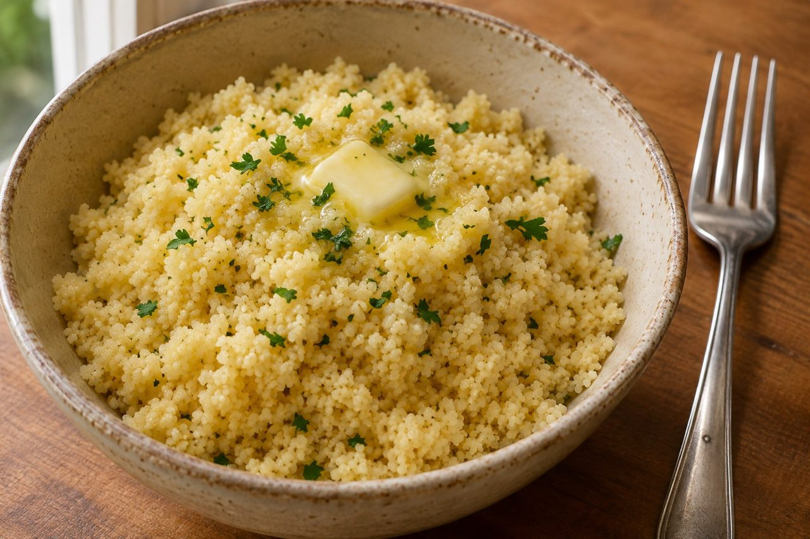

Middle Eastern-inspired · Side · Serves 4 · 10 min
Buttery Couscous

Ingredient amounts are estimates when scaled. Original recipe and AnyList import remain unchanged.
Ingredients
- 1½ cups dry regular couscous (not pearl couscous)
- 1½ cups low-sodium chicken broth, or amount specified on couscous package
- 1½ tbsp butter
- 1 tbsp chopped parsley, optional
- Salt and black pepper, to taste
Instructions
- Bring broth and butter to a boil in a covered saucepan. Follow your couscous package if its liquid ratio differs.
- Stir in regular couscous, cover, remove from heat and stand for 5 minutes or according to the package.
- Fluff thoroughly with a fork. Fold in optional parsley and season to taste. Serve with shawarma chicken and garlic yogurt.